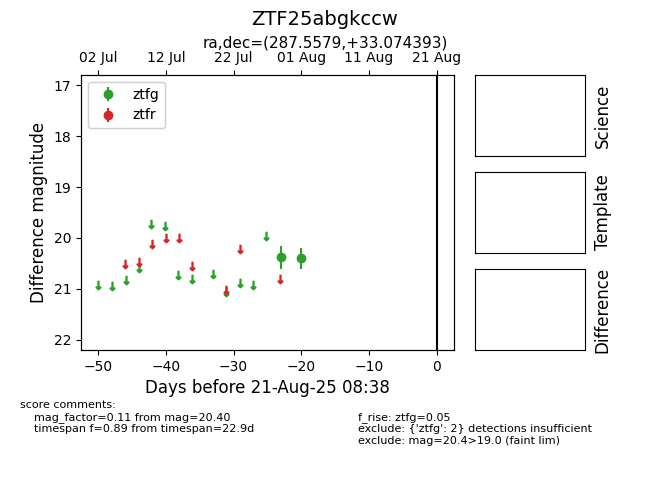

Target ZTF25abgkccw at 2025-08-21 08:38, see:
FINK: fink-portal.org/ZTF25abgkccw
Lasair: lasair-ztf.lsst.ac.uk/objects/ZTF25abgkccw
ALeRCE: alerce.online/object/ZTF25abgkccw
alt names
ZTF25abgkccw (ztf,alerce)
coordinates:
equatorial (ra, dec) = (287.5579,+33.07439)
galactic (l, b) = (64.6911,+10.82186)
photometry
last ztfg=20.40
2 ztfg detections
